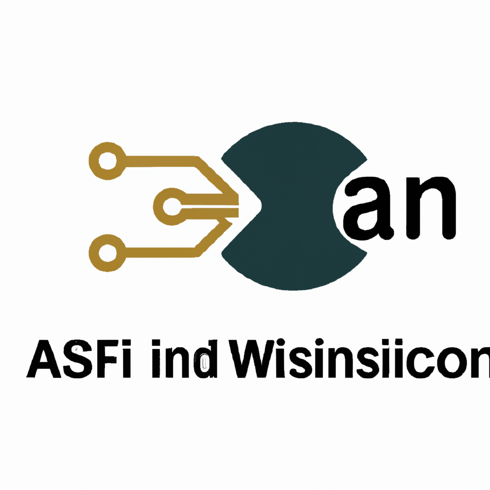

AI and Python
AI and Python
Exploring new technologies is a crucial part of my journey as a DevOps and Platform engineer. Among the many tools shaping the tech landscape, artificial intelligence stands out, and Python has become its close ally.
Python’s clear syntax and vast library ecosystem make it ideal for experimenting with machine learning and AI concepts. Whether it’s building models using scikit-learn, automating tasks with scripts, or deploying solutions in cloud environments, Python’s versatility continues to impress me.
My work often involves integrating AI-driven solutions into infrastructure workflows. From intelligent monitoring to automated scaling, I’ve seen how AI can optimize operations and uncover new efficiencies. The fast-evolving world of AI pushes me to learn continuously, ensuring I stay at the forefront of technology.
Staying curious and hands-on with tools like Python empowers me to solve complex problems and build smarter systems. For anyone interested in tech, diving into AI and Python unlocks a world of possibilities and keeps you ahead in this dynamic field.